1
Bono de bienvenida
555.000 ARS + 100 FS
ARS777
En Argentina, en redes circula el término casino del Kun Aguero y muchos llegan por anuncios reenviados. Se revisaron 27 plataformas entre noviembre de 2025 y enero de 2026, con foco en licencias, cobros y soporte. Se descartaron sitios sin KYC o con dominios nuevos. Para quien escribe Kun Aguero casino desde el celular, el objetivo es comparar y reducir riesgo.
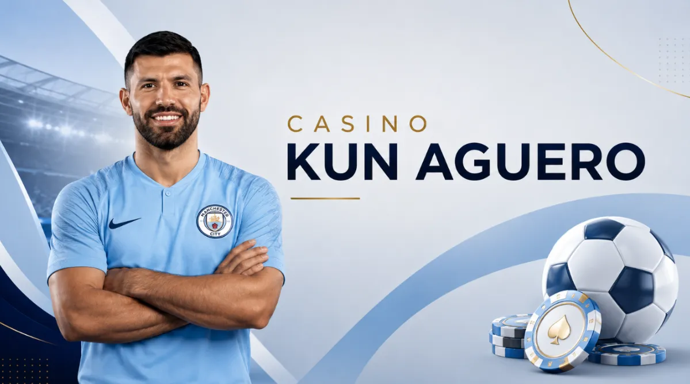
Antes de elegir, se explica que Kun Aguero casino online puede referir a marcas, afiliados o imitaciones, y que conviene validar operador y dominio.
Aviso: Este artículo es informativo y no representa afiliación ni recomendación personalizada. Las condiciones de bonos, retiros y licencias cambian; conviene verificar términos en el sitio y usar solo dominios oficiales antes de registrarse o instalar una app.
555.000 ARS + 100 FS
Bono del 700% hasta 3 810 000 ARS + 600 FS
100% + 50 FS
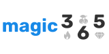
375% + 250 FS
Bono por 4 depósitos: hasta 1.272.000 ARS + 150 FS
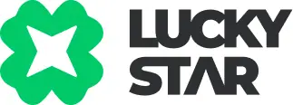
¡OBTÉN 250% hasta $2.500.000 AHORA!
575% +500 Giros Gratis
100% hasta 777.000 ARS
Reunimos 8 plataformas de casino online que suelen aparecer en búsquedas relacionadas con el Kun Aguero, comparando condiciones reales como depósito mínimo, retiro, licencias, soporte y bonos de bienvenida. Así puedes evaluar cada opción con más claridad antes de jugar.
La lista prioriza métodos locales, tiempos de retiro y reglas claras, porque el ARS cambia rápido y eso afecta límites. En la práctica, una búsqueda como casino del Kun Aguero en Argentina termina en el cajero y en el soporte. Los valores son rangos vistos en la revisión y conviene confirmarlos antes de depositar.
Para un top, conviene comparar lo que afecta al jugador: KYC, métodos de pago, límites, tiempos de retiro y reglas de bonos. Si una plataforma no publica términos completos o los cambia sin aviso, se descarta en la evaluación.
Tabla comparativa de 10 plataformas
| Plataforma | Licencia | Dep mín ARS | Ret mín ARS | Retiro medio | Métodos | Juegos | Bono % | Soporte | Nota |
| Stake Casino Kun Aguero | Buenos Aires IPLyC | ≈5.000 | ≈10.000 | 0 a 8 h | Cripto, Tarj. | 1.000+ | 200 | Chat | 9,3 |
| 1win | Curaçao | 1.500 | 3.000 | 0 a 24 h | Tarj., Cripto | 2.200+ | 600 | Chat | 8,6 |
| Winum Aguero | Anjouan | ≈15.000 | ≈25.000 | 0 a 72 h | Cripto, Tarj. | 10.000+ | 500 | Chat | 8,1 |
| Jugabet | Curaçao | 2.500 | 4.000 | 0 a 24 h | Transf., Tarj., Cripto | 9.000+ | 100 | Chat | 8,0 |
| Roobet | Curaçao | ≈15.000 | ≈20.000 | Minutos a 12 h | Cripto, Tarj. | 6.300+ | 100 | Chat | 8,8 |
| TopX | Anjouan | 3.000 | 9.000 | 1 a 2 h | Transf., Cripto | 4.000+ | 500 | Chat, Telegram | 7,8 |
| 1xSlots | Curaçao CGA | ≈2.000 | ≈22.000 | 1 a 24 h | Cripto, Tarj., e-wallets | 11.000+ | 150 | Chat | 8,5 |
| Lucky Star | Curaçao | 5.000 | 7.200 | 24 a 48 h | Transf., Tarj., Cripto | 5.000+ | 500 | Chat, Tickets | 8,0 |
| Fortunazo | Curaçao CGA | 3.000 | 5.000 | 10 min a 3 días | MP, NaranjaX, Transf., Cripto | 4.000+ | 550 | Chat | 8,2 |
| Betonwin | Anjouan | ≈3.000 | ≈15.000 | 0 a 24 h | Tarj., Cripto, e-wallets | 6.000+ | 100 | Chat | 7,7 |
Para aterrizar la elección, se miran tres puntos: velocidad de cobro, fricción de verificación y coherencia del bono con el tipo de juego. En foros locales se ve que el primer conflicto nace cuando el usuario no entiende el límite diario o el requisito de apuesta. Por eso, antes de abrir cuenta conviene decidir un presupuesto y una meta de retiro, incluso si la búsqueda empezó como kun casino en una noche con amigos.
Recomendable empezar por verificar licencia, razón social y canales de soporte. Cuando faltan datos básicos o el dominio cambia seguido, sube el riesgo operativo. Un depósito mínimo y un retiro parcial sirven para probar el flujo.
Stake ocupa el primer lugar del ranking gracias a su funcionamiento estable, su sistema de pagos con criptomonedas y un catálogo que combina tragamonedas, juegos rápidos, casino en vivo y apuestas deportivas.
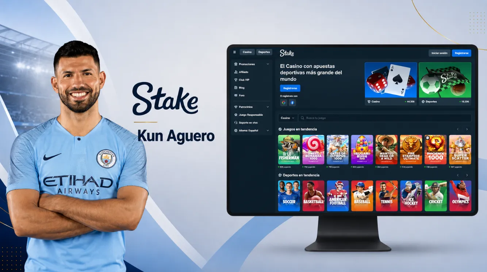
La relación pública entre Stake y Sergio Kun Aguero ha provocado que muchos usuarios busquen expresiones como Stake Casino Kun Aguero. La plataforma pertenece a su propio operador, mientras que el exfutbolista participa como embajador y figura promocional.
El depósito mínimo equivalente se sitúa alrededor de 5.000 ARS, mientras que el retiro comienza aproximadamente desde 10.000 ARS. Los tiempos de procesamiento pueden variar según la criptomoneda, la red y el nivel de verificación de la cuenta.
Ventajas
Desventajas
| Parámetro | Dato |
| Licencia | Buenos Aires IPLyC |
| Depósito mínimo | ≈5.000 ARS |
| Retiro mínimo | ≈10.000 ARS |
| Retiro medio | 0 a 8 horas |
| Métodos | Criptomonedas y tarjetas |
| Catálogo | Más de 1.000 juegos |
| Bono | Hasta 200% |
| Soporte | Chat |
| Nota | 9,3 |
Antes de realizar una operación importante, conviene probar el sistema con un depósito y un retiro pequeños. También es recomendable comprobar la red seleccionada, ya que enviar fondos mediante una red incorrecta puede retrasar o impedir la acreditación.
Stake es la alternativa más completa del ranking para usuarios familiarizados con criptomonedas. Destaca por su velocidad, su experiencia móvil y la integración entre casino y apuestas. Su principal limitación es que el jugador debe controlar la conversión entre ARS y cripto.
Roobet ocupa el segundo lugar gracias a su catálogo extenso, su enfoque en criptomonedas y su sistema de recompensas. La plataforma ofrece tragamonedas, mesas en vivo, juegos crash, apuestas deportivas y títulos desarrollados especialmente para su comunidad.
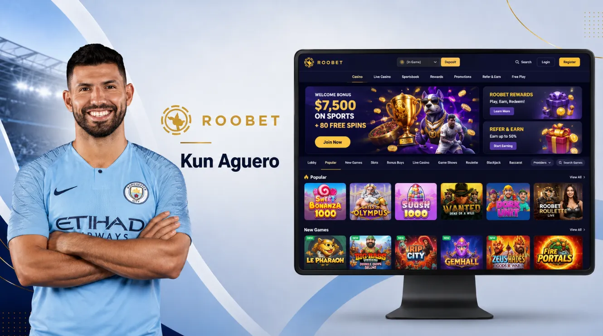
Aunque Roobet no pertenece al Kun Aguero, puede aparecer en comparativas relacionadas con plataformas populares entre streamers, jugadores digitales y comunidades de gaming.
El depósito mínimo equivalente comienza aproximadamente desde 15.000 ARS. El retiro mínimo se encuentra alrededor de 20.000 ARS, aunque ambos valores pueden cambiar según la criptomoneda y el proveedor utilizado para comprar los fondos.
Ventajas
Desventajas
| Parámetro | Dato |
| Licencia | Curaçao |
| Depósito mínimo | ≈15.000 ARS |
| Retiro mínimo | ≈20.000 ARS |
| Retiro medio | De minutos a 12 horas |
| Métodos | Criptomonedas y tarjetas |
| Catálogo | Más de 6.300 juegos |
| Bono | Hasta 100% |
| Soporte | Chat |
| Nota | 8,8 |
Para calcular el costo real de una operación, hay que considerar el precio de compra de la criptomoneda, la comisión de la plataforma de intercambio y el costo de la red utilizada para retirar.
Roobet es una opción sólida para jugadores que buscan una plataforma cripto con recompensas frecuentes. Su catálogo es más amplio que el de Stake, pero los límites de entrada pueden resultar menos accesibles para quienes prefieren comenzar con cantidades pequeñas.
1win ocupa la tercera posición por ofrecer uno de los depósitos mínimos más bajos del ranking. Su plataforma combina tragamonedas, casino en vivo, juegos rápidos, Aviator, apuestas deportivas y promociones para nuevos usuarios.
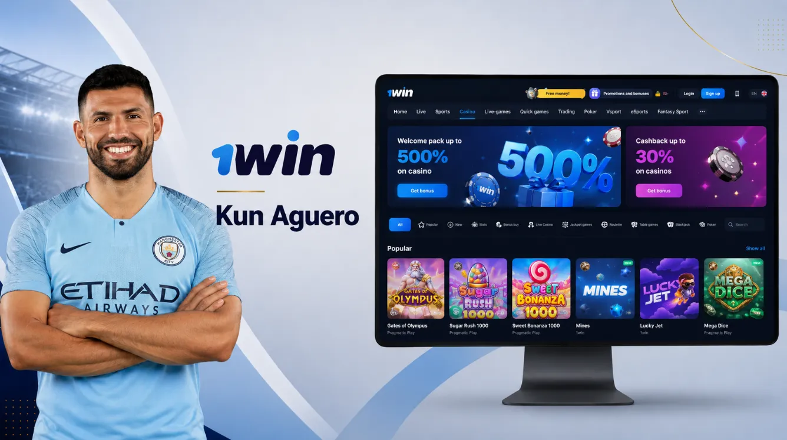
En Argentina puede operar mediante tarjetas, criptomonedas y procesadores que realizan la conversión desde pesos argentinos. Las condiciones exactas disponibles aparecen dentro del cajero después de seleccionar la moneda y la región. El depósito mínimo comienza desde aproximadamente 1.500 ARS, mientras que el retiro mínimo se encuentra alrededor de 3.000 ARS.
Ventajas
Desventajas
| Parámetro | Dato |
| Licencia | Curaçao |
| Depósito mínimo | 1.500 ARS |
| Retiro mínimo | 3.000 ARS |
| Retiro medio | 0 a 24 horas |
| Métodos | Tarjetas y criptomonedas |
| Catálogo | Más de 2.200 juegos |
| Bono | Hasta 600% |
| Soporte | Chat |
| Nota | 8,6 |
Antes de activar el paquete promocional, es importante revisar el rollover, el plazo disponible, la apuesta máxima permitida y los juegos que contribuyen al cumplimiento de los requisitos.
1win es una de las plataformas más accesibles del ranking para comenzar con un presupuesto reducido. Su bono es uno de los más altos, aunque el porcentaje anunciado no debe evaluarse sin revisar previamente las condiciones de apuesta.
1xSlots ocupa el cuarto lugar y destaca principalmente por su catálogo de más de 11.000 juegos. La plataforma está orientada a usuarios que buscan tragamonedas, jackpots, torneos y promociones relacionadas con proveedores específicos.
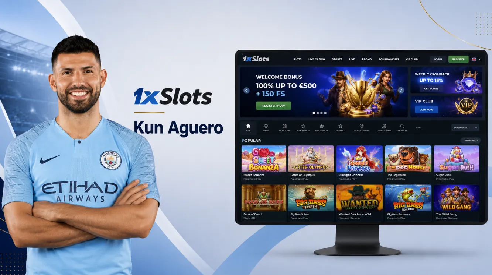
Admite tarjetas, billeteras electrónicas y criptomonedas. El depósito mínimo equivalente puede comenzar alrededor de 2.000 ARS, pero el retiro mínimo resulta considerablemente más alto que en otras opciones del ranking.
Ventajas
Desventajas
| Parámetro | Dato |
| Licencia | Curaçao CGA |
| Depósito mínimo | ≈2.000 ARS |
| Retiro mínimo | ≈22.000 ARS |
| Retiro medio | 1 a 24 horas |
| Métodos | Criptomonedas, tarjetas y e-wallets |
| Catálogo | Más de 11.000 juegos |
| Bono | Hasta 150% |
| Soporte | Chat |
| Nota | 8,5 |
Debido a la diferencia entre el depósito y el retiro mínimo, conviene planificar el presupuesto antes de comenzar. Un saldo pequeño puede no alcanzar inicialmente el límite requerido para solicitar el pago.
1xSlots es la mejor alternativa del ranking para usuarios que priorizan la cantidad de tragamonedas. Su principal desventaja es el retiro mínimo, que puede resultar poco práctico para jugadores que utilizan una banca reducida.
Fortunazo ocupa el quinto lugar por combinar pagos locales, criptomonedas y una promoción de bienvenida considerable. La plataforma ofrece tragamonedas, casino en vivo, juegos rápidos y acceso desde dispositivos móviles.
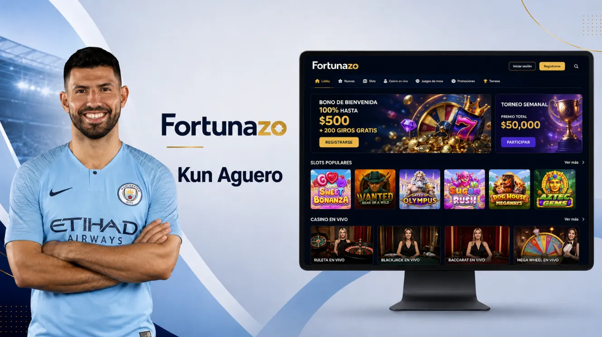
Para jugadores argentinos, uno de sus principales puntos fuertes es la posibilidad de utilizar métodos como Mercado Pago, Naranja X, transferencias, Binance Pay y otras opciones con criptomonedas.
El depósito mínimo es de 3.000 ARS y el retiro mínimo comienza desde 5.000 ARS. Los pagos pueden completarse en pocos minutos, aunque algunas operaciones pueden extenderse hasta tres días.
Ventajas
Desventajas
| Parámetro | Dato |
| Licencia | Curaçao CGA |
| Depósito mínimo | 3.000 ARS |
| Retiro mínimo | 5.000 ARS |
| Retiro medio | De 10 minutos a 3 días |
| Métodos | Mercado Pago, Naranja X, transferencias y cripto |
| Catálogo | Más de 4.000 juegos |
| Bono | Hasta 550% |
| Soporte | Chat |
| Nota | 8,2 |
Antes de activar la promoción, hay que comprobar cómo se distribuye el bono entre los primeros depósitos y cuántos giros gratis corresponden a cada etapa.
Fortunazo es una de las opciones más cómodas para usuarios que quieren operar directamente con ARS. No ofrece los retiros más uniformes del ranking, pero compensa con métodos locales, límites accesibles y una promoción inicial competitiva.
Winum Aguero ocupa la sexta posición y se presenta como una plataforma internacional con tragamonedas, casino en vivo, juegos rápidos y acceso mediante tarjetas o criptomonedas.
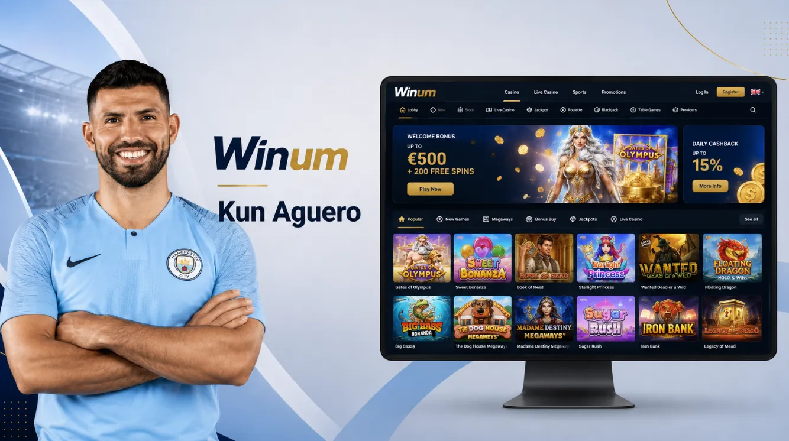
El nombre Winum Aguero se utiliza en búsquedas relacionadas con el Kun, aunque es importante comprobar siempre el dominio correcto y las condiciones que aparecen directamente en el cajero de la plataforma.
Su catálogo supera los 10.000 títulos, lo que la sitúa entre las opciones con mayor variedad. Sin embargo, sus límites mínimos son más altos que los de 1win, Fortunazo o Jugabet.
Ventajas
Desventajas
| Parámetro | Dato |
| Licencia | Anjouan |
| Depósito mínimo | ≈15.000 ARS |
| Retiro mínimo | ≈25.000 ARS |
| Retiro medio | 0 a 72 horas |
| Métodos | Criptomonedas y tarjetas |
| Catálogo | Más de 10.000 juegos |
| Bono | Hasta 500% |
| Soporte | Chat |
| Nota | 8,1 |
Las cantidades en ARS son orientativas, ya que pueden depender de la moneda configurada, el tipo de cambio y el sistema utilizado para completar el pago.
Winum resulta atractiva por la profundidad de su catálogo y su promoción de bienvenida. Es más adecuada para jugadores con un presupuesto medio que para quienes desean probar una plataforma con un depósito pequeño.
Jugabet ocupa el séptimo lugar de la clasificación. Su plataforma combina casino online, tragamonedas, mesas en vivo y apuestas deportivas, con acceso mediante transferencias, tarjetas y criptomonedas.
La posibilidad de utilizar medios de pago conocidos facilita la gestión de depósitos para usuarios argentinos. El depósito mínimo se sitúa alrededor de 2.500 ARS y el retiro comienza desde aproximadamente 4.000 ARS.
Ventajas
Desventajas
| Parámetro | Dato |
| Licencia | Curaçao |
| Depósito mínimo | 2.500 ARS |
| Retiro mínimo | 4.000 ARS |
| Retiro medio | 0 a 24 horas |
| Métodos | Transferencias, tarjetas y cripto |
| Catálogo | Más de 9.000 juegos |
| Bono | Hasta 100% |
| Soporte | Chat |
| Nota | 8,0 |
Para evitar retrasos, conviene que el método utilizado para retirar esté registrado a nombre del mismo titular que completó la verificación de la cuenta.
Jugabet mantiene un buen equilibrio entre límites, catálogo y métodos disponibles. No lidera una categoría específica, pero ofrece condiciones competitivas para usuarios que buscan una plataforma versátil y accesible.
Lucky Star ocupa la octava posición. La plataforma combina tragamonedas, casino en vivo, apuestas deportivas y acceso móvil, además de aceptar tarjetas, transferencias y criptomonedas.
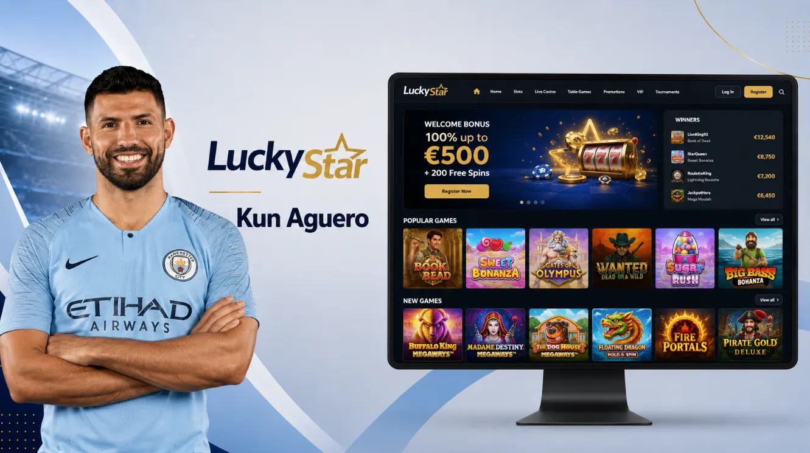
Su catálogo supera los 5.000 juegos y la promoción puede alcanzar el 500%. El depósito mínimo comienza desde 5.000 ARS y el retiro desde aproximadamente 7.200 ARS.
Ventajas
Desventajas
| Parámetro | Dato |
| Licencia | Curaçao |
| Depósito mínimo | 5.000 ARS |
| Retiro mínimo | 7.200 ARS |
| Retiro medio | 24 a 48 horas |
| Métodos | Transferencias, tarjetas y criptomonedas |
| Catálogo | Más de 5.000 juegos |
| Bono | Hasta 500% |
| Soporte | Chat y tickets |
| Nota | 8,0 |
La plataforma puede solicitar documentación antes de procesar el primer retiro. Completar la verificación con anticipación ayuda a evitar que la comprobación se realice después de solicitar el pago.
Lucky Star ofrece un catálogo amplio y una promoción competitiva. Su valoración queda por debajo de Jugabet debido principalmente a los tiempos de retiro, que normalmente comienzan desde 24 horas.
TopX ocupa el noveno puesto, aunque presenta uno de los tiempos de retiro más rápidos de la comparativa. La plataforma combina pagos mediante transferencia y criptomonedas, un catálogo superior a 4.000 juegos y soporte por chat y Telegram.
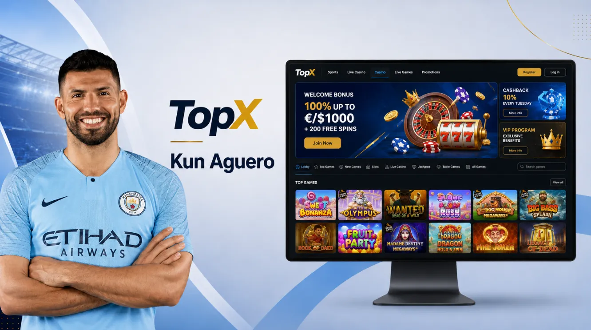
El depósito mínimo comienza desde 3.000 ARS y el retiro desde 9.000 ARS. En condiciones normales, el procesamiento puede completarse entre una y dos horas.
Ventajas
Desventajas
| Parámetro | Dato |
| Licencia | Anjouan |
| Depósito mínimo | 3.000 ARS |
| Retiro mínimo | 9.000 ARS |
| Retiro medio | 1 a 2 horas |
| Métodos | Transferencias y criptomonedas |
| Catálogo | Más de 4.000 juegos |
| Bono | Hasta 500% |
| Soporte | Chat y Telegram |
| Nota | 7,8 |
TopX puede ser práctica para quienes valoran la velocidad de procesamiento. Sin embargo, es importante considerar desde el inicio que el saldo deberá superar el retiro mínimo establecido.
El punto más fuerte de TopX es la rapidez de los pagos. Su posición en el ranking baja por el retiro mínimo y por una cobertura menos uniforme que la de otras plataformas incluidas en la comparación.
Betonwin completa el top 10. La plataforma reúne casino online, tragamonedas, juegos en vivo y apuestas deportivas, con pagos mediante tarjetas, criptomonedas y billeteras electrónicas.
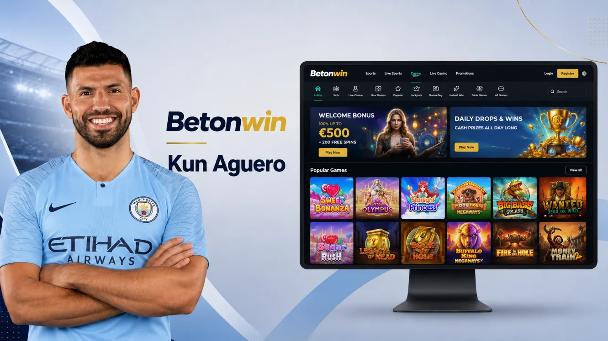
El depósito mínimo equivalente comienza aproximadamente desde 3.000 ARS. El retiro mínimo se sitúa alrededor de 15.000 ARS y puede procesarse dentro de un plazo de hasta 24 horas.
Ventajas
Desventajas
| Parámetro | Dato |
| Licencia | Anjouan |
| Depósito mínimo | ≈3.000 ARS |
| Retiro mínimo | ≈15.000 ARS |
| Retiro medio | 0 a 24 horas |
| Métodos | Tarjetas, criptomonedas y e-wallets |
| Catálogo | Más de 6.000 juegos |
| Bono | Hasta 100% |
| Soporte | Chat |
| Nota | 7,7 |
Antes de depositar, conviene abrir el cajero y verificar qué métodos están disponibles para la cuenta. El importe mínimo puede ser diferente según la moneda o el sistema seleccionado.
Betonwin ofrece un catálogo amplio y una experiencia completa, pero queda en la última posición debido al retiro mínimo y a la dependencia de conversiones en determinadas operaciones. Sigue siendo una alternativa válida para usuarios que priorizan variedad de juegos y apuestas.
Esta tabla reúne las diez plataformas analizadas anteriormente. El orden se basa en la valoración general de cada operador, teniendo en cuenta la velocidad de los retiros, los límites mínimos, la variedad de métodos de pago, el catálogo de juegos, las promociones y la calidad del soporte.
Stake Casino Kun Aguero ocupa el primer lugar por su popularidad, sus retiros rápidos y su enfoque en criptomonedas. Roobet destaca por sus juegos propios y recompensas, mientras que 1win ofrece límites de entrada accesibles y una promoción de bienvenida elevada.
Antes de registrarte, conviene comprobar qué métodos están disponibles para Argentina, si el servicio funciona en tu provincia y cuáles son las condiciones aplicadas a depósitos, retiros y bonos.
| 🥇 Operador | 📄 Licencia | 💵 Depósito mínimo ARS | 💸 Retiro mínimo ARS | ⏱️ Retiro medio | 🧰 Métodos de pago | 🔗 Cripto | 🎊 Bono de bienvenida | 🌟 Calificación |
| Stake Casino Kun Aguero | Curaçao CGA | ≈5.000 | ≈10.000 | 0 a 8 h | Cripto, tarjetas | Sí | Hasta 200% | 9,3 |
| Roobet | Curaçao | ≈15.000 | ≈20.000 | Minutos a 12 h | Cripto, tarjetas | Sí | Hasta 100% | 8,8 |
| 1win | Curaçao | 1.500 | 3.000 | 0 a 24 h | Tarjetas, cripto | Sí | Hasta 600% | 8,6 |
| 1xSlots | Curaçao CGA | ≈2.000 | ≈22.000 | 1 a 24 h | Tarjetas, e-wallets, cripto | Sí | Hasta 150% | 8,5 |
| Fortunazo | Curaçao CGA | 3.000 | 5.000 | 10 min a 3 días | Mercado Pago, Naranja X, transferencia, cripto | Sí | Hasta 550% | 8,2 |
| Winum Aguero | Anjouan | ≈15.000 | ≈25.000 | 0 a 72 h | Tarjetas, cripto | Sí | Hasta 500% | 8,1 |
| Jugabet | Curaçao | 2.500 | 4.000 | 0 a 24 h | Transferencia, tarjetas, cripto | Sí | Hasta 100% | 8,0 |
| Lucky Star | Curaçao | 5.000 | 7.200 | 24 a 48 h | Transferencia, tarjetas, cripto | Sí | Hasta 500% | 8,0 |
| TopX | Anjouan | 3.000 | 9.000 | 1 a 2 h | Transferencia, cripto | Sí | Hasta 500% | 7,8 |
| Betonwin | Anjouan | ≈3.000 | ≈15.000 | 0 a 24 h | Tarjetas, e-wallets, cripto | Sí | Hasta 100% | 7,7 |
Las cantidades indicadas con el símbolo ≈ son aproximadas. El valor final puede cambiar según la moneda de la cuenta, el tipo de cambio, la criptomoneda seleccionada y el método de pago disponible. Después de revisar la tabla, conviene definir qué factor es más importante para vos. Stake y Roobet resultan más adecuados para usuarios que ya utilizan criptomonedas, mientras que Fortunazo y Jugabet ofrecen condiciones más cómodas para operar con pesos argentinos.
1win presenta el depósito mínimo más bajo del ranking. TopX destaca por sus retiros de una a dos horas, y 1xSlots o Winum pueden resultar más atractivos para quienes priorizan la cantidad de juegos disponibles. También es importante decidir si vas a utilizar principalmente el casino, los juegos en vivo o las apuestas deportivas. Tener un presupuesto separado para cada categoría ayuda a controlar mejor el saldo y evita dispersar la banca.
El nombre de Aguero circula en estafas y anuncios, y él mismo advirtió que no tiene un casino a su nombre. Por eso, cuando alguien escribe casino del Kun Aguero oficial, la primera tarea es validar licencia, operador real y canales de soporte. La selección también pondera estabilidad del cajero, herramientas de autoexclusión y claridad de términos.
Un operador serio muestra licencia, razón social y jurisdicción, y no lo esconde en un PDF perdido. En Argentina el juego online se regula a nivel provincial, con marcos distintos entre CABA, Buenos Aires, Córdoba o Mendoza, así que conviene ubicar dónde opera la marca. En búsquedas como casino oficial del Kun Aguero, se recomienda revisar HTTPS, políticas de privacidad y opciones de 2FA.
La palabra oficial no sustituye verificación. Lo determinante es una licencia comprobable y políticas claras de KYC, privacidad y disputas. Si no hay entidad responsable y jurisdicción identificable, aumenta la probabilidad de bloqueos y pagos fallidos.
La caja separa experiencia real de marketing, y la consulta casino argentina Kun Aguero suele terminar ahí. En promedio, billeteras y cripto pagan más rápido que transferencias. Para reducir fricción, conviene depositar con un medio a nombre propio y usar el mismo en el retiro.
Pasos prácticos para evaluar pagos antes de jugar:
Con esa prueba se entiende el ritmo del sitio y se evita operar con supuestos.
Los bonos se ven como dinero extra, pero en la práctica son un contrato: monto, plazo y requisito de apuesta. En un entorno de kun casino, la regla que más afecta es el wagering, porque define cuántas veces se debe apostar antes de retirar. También importan el límite por giro y el porcentaje que aportan slots, live o apuestas. Si no se planea cumplir, es mejor jugar sin promo.
Los bonos se entienden como contrato. Importan contribución por juego, apuesta máxima y juegos excluidos. En auditorías, muchos bloqueos vienen por exceder límites por giro o jugar en secciones no elegibles. Sin reglas simples, conviene evitar bono.
El soporte se mide por resolver pagos retenidos y explicar reglas, no por el saludo. Cuando se busca casino del Kun Aguero oficial, el riesgo es caer en páginas con bot y sin respuesta humana. En pruebas, los mejores sitios ofrecen chat y un centro de ayuda. En móvil, importa que el cajero cargue en 4G y que el KYC acepte fotos legibles. También suma poder fijar límites y pausa.
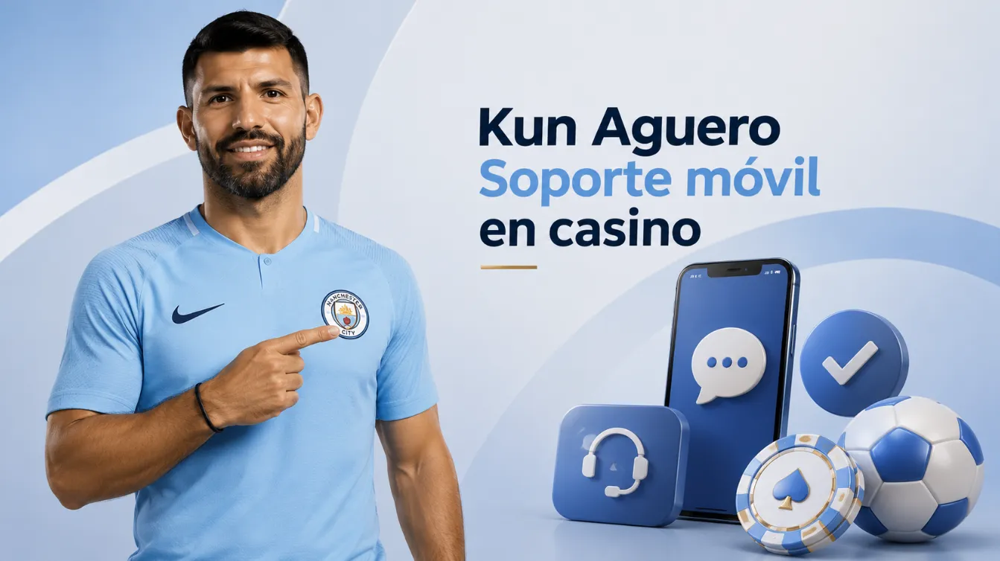
La variedad ayuda, pero el punto es proveedor confiable y streaming estable en vivo. En esta guía se priorizan catálogos con slots, live y juegos rápidos, porque el usuario alterna sesiones cortas y fines de semana. Al comparar, el término Kun Aguero casino oficial sirve para recordar que hay que buscar RTP publicado, reglas claras y filtros por proveedor.
El registro es rápido, pero fallas de datos frenan retiros. Cuando alguien llega desde casino virtual del Kun Aguero, suele saltar al depósito y omite el perfil. Conviene usar correo propio, activar 2FA y guardar comprobantes del primer depósito. Un retiro de prueba pequeño confirma plazos y evita sorpresas.
Pasos para abrir cuenta y validar el perfil:
Después, se puede subir el depósito y elegir juegos con ritmo controlable.
En Argentina domina el móvil y conviene probar el sitio en 4G antes de depositar. En esa rutina, la consulta plataforma del Kun Aguero casino suele significar carga rápida en equipos comunes. También ayuda abrir el chat sin cerrar el juego y revisar límites en pantalla chica. Si se pide instalar, cualquier referencia a la app de Stake debe llevar a un canal oficial y no a un APK reenviado.
Buenas prácticas para jugar desde el teléfono:
En búsquedas de descarga aparece descargar casino del Kun Aguero, y conviene ignorar acortadores. Se revisa el certificado del sitio y se entra por el dominio verificado. Si se ve stake casino Kun Aguero descargar, se compara el dominio con el de la cuenta antes de iniciar sesión.
Antes de depositar, conviene revisar los límites, las comisiones, los tiempos de retiro y los métodos disponibles para Argentina.
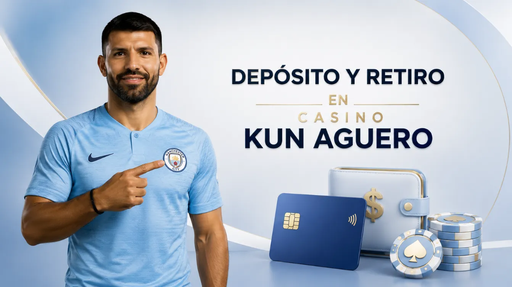
Para evitar problemas, es recomendable comenzar con una cantidad pequeña, guardar los comprobantes y completar el KYC antes de solicitar el primer retiro.
Antes de elegir, se recomienda pensar en velocidad, costo y trazabilidad. Con eso, la comparación se vuelve simple y se evita saltar de método sin control.
| Método | Moneda | Dep mín ARS | Retiro (h) | Comisión típica | KYC | Nota |
| Mercado Pago | ARS | 2.000 | 0 a 24 | 0 a 1% | Medio | 9,0 |
| Transferencia | ARS | 2.500 | 6 a 48 | 0% | Alto | 8,5 |
| Visa | ARS/USD | 2.000 | N/A | 0 a 3% | Medio | 7,8 |
| Mastercard | ARS/USD | 2.000 | N/A | 0 a 3% | Medio | 7,7 |
| Ualá | ARS | 2.000 | 0 a 24 | 0 a 1% | Medio | 8,2 |
| Naranja X | ARS | 2.000 | 0 a 24 | 0 a 1% | Medio | 8,1 |
| MODO | ARS | 2.000 | 0 a 24 | 0 a 1% | Medio | 8,0 |
| Pago Fácil | ARS | 3.000 | N/A | 0 a 2% | Bajo | 7,3 |
| Rapipago | ARS | 3.000 | N/A | 0 a 2% | Bajo | 7,2 |
| Cripto USDT/BTC | USD | 10 USDT | 0 a 1 | Fee red | Variable | 8,6 |
Luego conviene mantener un solo método por un tiempo, para reducir revisiones extra y controlar el presupuesto. Ese orden evita volver a buscar casino del Kun Aguero cuando ya se eligió un método.
La elección del juego define el ritmo y el riesgo, y eso importa más que el diseño. En sesiones cortas, muchos usuarios llegan desde búsquedas como Casino Kun Aguero buscando juegos simples y resultados rápidos. La recomendación es alternar un juego con reglas claras, como ruleta europea, y uno de control, como blackjack con estrategia básica. También sirve revisar el RTP típico, porque cambia el costo esperado por hora.
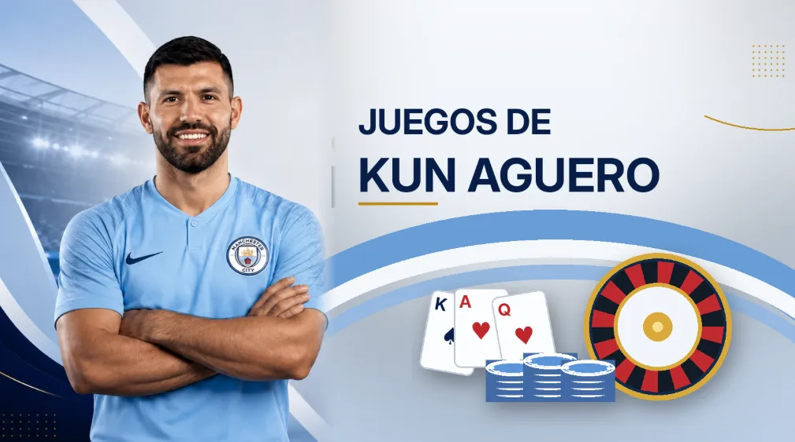
Aviator es un crash: el multiplicador sube y puede caer sin aviso. La clave es fijar un cashout objetivo y no moverlo por impulso. Por el ritmo rápido, conviene usar apuestas chicas y cortar cada 15 minutos. Si se pierde control, se termina la sesión y se retira el saldo previsto.
Plinko es rápido y por eso engancha, aunque el resultado sea azar. Quien llega desde casino del Kun Aguero suele probarlo por simplicidad. El punto práctico es elegir un perfil de riesgo y no cambiarlo por impulso. En modo alto riesgo, el saldo cae rápido y aparecen recargas sin plan. Conviene usar apuestas fijas y cortar por tiempo.
Recomendaciones de uso con foco en control:
Con esas reglas, la conducta mejora, aunque el resultado siga siendo aleatorio.
El bingo online tiene ritmo moderado y funciona para sesiones largas. En Argentina muchos lo prueban tras ver publicidad de el casino del Kun Aguero en redes. Conviene mirar precio por cartón y partidas por hora, porque ahí está el gasto. Si se juega por premios, se fija un horario y se cierra a tiempo.
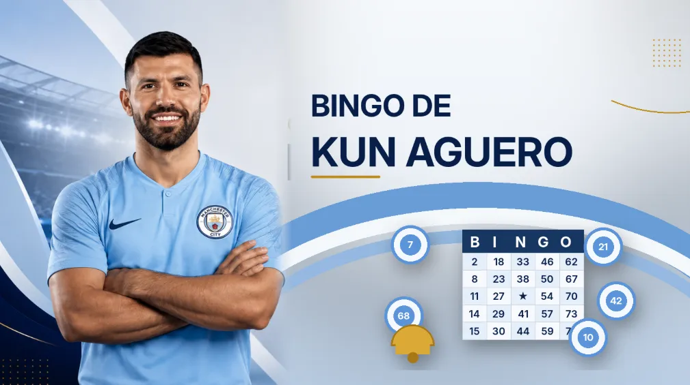
Mines parece un puzzle, pero el resultado es azar. Para usarlo con control, conviene fijar una cantidad de clics por ronda y retirar parcial al llegar a un objetivo. Al subir clics, el riesgo crece fuerte y el saldo puede caer rápido. Recordatorios de tiempo ayudan.
El blackjack reduce la ventaja de la casa si se usa estrategia básica. En vivo, conviene jugar solo si el streaming es estable y la mesa tiene límites claros. Para controlar, se apuesta fijo y se define un número máximo de manos. Si el saldo sube, se retira una parte.
La ruleta europea tiene un cero y un RTP teórico cercano al 97,3%. Para no perder control, conviene usar apuestas externas y definir un número de giros. En vivo, se revisa mínimo y máximo antes de entrar, porque cambian mucho entre mesas. Al cumplir el plan, se sale.
Esta tabla resume juegos comunes y parámetros que ayudan a estimar costo y ritmo. Los RTP son valores típicos y pueden variar por proveedor o reglas.
| Juego | Tipo | RTP (%) | Volatilidad (1-5) | Apuesta mín (ARS) |
| Ruleta europea | Mesa | 97,3 | 2 | 200 |
| Blackjack live | Mesa | 99,5 | 2 | 500 |
| Baccarat | Mesa | 98,9 | 2 | 500 |
| Slots clásica | Slots | 96,0 | 3 | 100 |
| Slots alta volatilidad | Slots | 96,0 | 5 | 100 |
| Aviator | Crash | 97,0 | 4 | 200 |
| Plinko | Rápido | 97,0 | 4 | 200 |
| Mines | Rápido | 96,5 | 4 | 200 |
| Bingo 90 | Bingo | 92,0 | 2 | 300 |
| Keno | Lotería | 90,0 | 3 | 200 |
| Poker video | Cartas | 99,0 | 3 | 100 |
| Crazy Time | Show | 96,0 | 5 | 200 |
| Andar Bahar | Cartas | 95,0 | 3 | 300 |
| Football Studio | Mesa | 97,0 | 3 | 200 |
| Dragon Tiger | Mesa | 96,3 | 3 | 300 |
Después de elegir, se recomienda mantener uno o dos títulos por sesión para medir varianza y evitar perseguir pérdidas.
El bono atrae, pero el costo real está en wagering, límites y plazo. En Argentina, muchos llegan desde Kun Aguero casino online y aceptan promos sin leer condiciones. El enfoque útil es tratar el bono como un descuento con reglas: juegos elegibles, apuesta máxima y retiro máximo. Abajo van formatos comunes y cómo suelen impactar en retiros.

El bono sin depósito es raro y suele traer límites altos. Normalmente pide KYC antes de permitir retiros y puede restringir IP o dispositivo. La recomendación es apostar bajo, cumplir el requisito y retirar sin reinvertir todo. Si pide depósito para liberar, ya no es sin depósito.
El paquete de bienvenida se divide en varios depósitos con porcentaje y, a veces, giros gratis. Cuando alguien llega desde el casino del Kun Aguero, suele aceptarlo completo y luego descubre juegos excluidos. Conviene tomar un tramo, probar retiro, y recién después usar el siguiente. Se anota plazo, apuesta máxima y wagering total.
El bono de cumpleaños depende del nivel y se activa con fecha verificada. Puede ser cashback, freebet o giros gratis con tope. Conviene pedirlo por soporte y guardar el ticket. No se recomienda depositar más solo por el bono, porque puede venir con wagering alto y bloquear retiros.
El bono por recarga aparece en depósitos posteriores y cambia seguido, así que conviene mirar tope, plazo y wagering. Si el requisito bloquea retiros, no sirve para quien quiere cobrar rápido. Para controlar, se recomienda elegir una frecuencia fija y no recargar para recuperar una pérdida.
Buenas prácticas para usar recargas sin fricción:
Con ese marco, la recarga acompaña y no manda.
Este bono suele ser alto y también el más condicionado. En campañas para casino virtual del Kun Aguero se ven porcentajes grandes con tope y free spins. Antes de depositar, conviene calcular el wagering con la apuesta prevista y mirar si bloquea retiros. Para probar pagos, un depósito chico sin bono suele funcionar mejor.
La tabla resume condiciones típicas usadas por operadores internacionales. Los valores varían por campaña, pero sirven como guía para leer términos.
| Tipo de bono | Wagering típico | Plazo (días) | Apuesta máx (ARS) | Contribución slots | Contribución live | Retiro máx relativo |
| Bienvenida 100% | 35x | 14 | 2.500 | 100% | 10% | 10x bono |
| Primer depósito 150% | 40x | 10 | 2.500 | 100% | 0% | 8x bono |
| Recarga semanal 50% | 25x | 7 | 3.000 | 100% | 20% | 15x bono |
| Cashback 10% | 0x | 3 | 0 | 0% | 0% | Sin tope |
| Free spins | 30x | 7 | 0 | 100% | 0% | 5x ganancias |
| Bono cumpleaños | 20x | 7 | 2.000 | 100% | 10% | 10x bono |
En Argentina el juego online se regula por provincias y por el operador licenciado en cada jurisdicción. Cuando una persona llega desde casino del Kun Aguero, conviene revisar provincia, entidad supervisora y reglas de autoexclusión. También ayuda confirmar edad mínima y canales de reclamo. Los términos cambian y vale guardar una captura del reglamento del día. Si se lee stake casino Kun Aguero descargar en un anuncio, conviene ignorarlo y entrar por el dominio verificado. Este apartado es informativo y no reemplaza asesoramiento profesional.

Aviso: La información legal y fiscal puede variar por provincia y situación personal. Esto no es asesoramiento jurídico ni contable. Para decisiones relevantes, consultar a un profesional y revisar la normativa vigente. Juego solo para mayores de edad y con herramientas de autoexclusión.
La protección se ve en KYC, límites y trazabilidad de pagos, no en banners. Si un sitio se presenta como casino oficial del Kun Aguero, debería mostrar operador, licencia y políticas de privacidad en un acceso visible. En este tipo de plataformas, conviene activar límites, usar 2FA y guardar comprobantes de depósitos y retiros.
El marco cambia por provincia, así que la legalidad se revisa caso por caso. En búsquedas como casino del Kun Aguero oficial, lo prudente es distinguir operadores provinciales, marcas offshore y páginas espejo.
Checklist rápido antes de jugar:
Estas verificaciones reducen riesgo y mejoran la capacidad de reclamo.
El tratamiento fiscal puede variar, por lo que conviene llevar registro. Si el movimiento viene de casino del Kun Aguero, ayuda guardar fecha, método y monto de cada depósito y retiro. Ese archivo sirve para explicar consumos al banco y ordenar el presupuesto. También permite separar juego de gasto diario. Al jugar en un flujo tipo kun aguero casino, con volumen alto se recomienda consultar a un contador.
Para impuestos y control, recomendable guardar comprobantes de depósito, retiro, fecha, método y tipo de cambio. Ese registro ayuda ante consultas bancarias y muestra el impacto real del juego. Con volumen alto, separar fondos evita confusiones.
El juego debe ser ocio y no ingreso. Si se pierde control, pausar y activar límites reduce daño. En ese momento, evitar recargas y cerrar sesión ayuda. Si el impulso nació por kun aguero casino, conviene hablar con alguien antes de volver a depositar. Cuando aparece el reflejo de buscar casino del Kun Aguero otra vez, es mejor pedir apoyo.
| Organización | Contacto | Horario | Web |
| SEDRONAR Línea 141 | Tel 141 | 24/7 | https://www.argentina.gob.ar/salud/sedronar |
| CABA Línea de orientación | 0800-666-6006 | Lun a vie, 9:00 a 17:00 | https://www.saberjugar.gob.ar/?page=linea-orientacion |
| Jugadores Anónimos | WhatsApp 11 4412 6745 | 14:30 a 18:00 | https://jugadoresanonimos.org.ar |
| Córdoba Juego Responsable | 0800-777-2983 | 24 hs | https://loteriadecordoba.com.ar/juego-responsable/programa |
Si la búsqueda empezó como kun casino, lo útil es medir el cajero primero y hacer un retiro de prueba. Un bono alto no compensa límites confusos. Cuando una plataforma del Kun Aguero casino cumple con eso, el juego queda en ocio. También ayuda tratar a Kun Aguero casino oficial como término de búsqueda y validar siempre el operador.